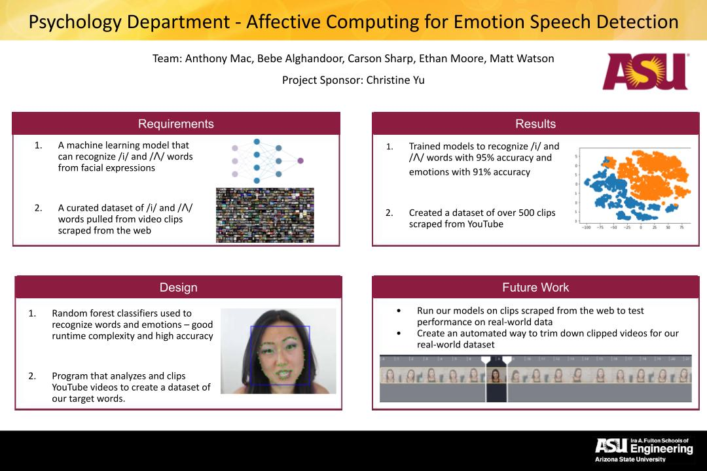

TEST

Our project looks to distinguish emotions based off of orofacial movements. Particularly we are looking at videos of people saying words containing the vowel sounds “ee” and “uh”. Our goal is to create a deep learning model to identify which vowel sound was said and which emotion was displayed based off of facial movements in the video. We will use past research done by our sponsor in a paper called “The Gleam-Glum Effect”, that found that words with the vowel sound “ee” (gleam) are associated with happiness and words with “uh” (glum) are associated with sadness. With the model, we will also use signature facial visual features found to transform or simulate the emotion on a person’s face in separate videos. This could be considered a Deepfake or synthetic media that will be used in research to test visual recognizability of speech and emotion. Our final goal will be to scrape internet videos and detect when a word with the “ee” or “uh” vowel was used. This will provide extra data that shows usages of “ee” and “uh” words outside of a lab environment.
Our model will provide value in the research being done with word symbolism and its direct correlations with emotion by the ASU Department of Psychology. While our project’s current intended use is for research purposes, there are many potential customers and products that could utilize our project. Advertising companies would highly benefit from being able to detect the emotions of a control group when discussing a new product. More accurate facial movements in video games and movies could be created using the transformation vectors of facial features obtained in the project. All the aspects this project aim to enhance communication through AI. This will only become more important as video conferencing becomes a main form of communication in people’s daily lives.